Koopman-MPPI keeps its lifted rollout linear in the input — a convention inherited from convex MPC that sampling never required. We give the criterion for when that is enough, and build the controller around it.
The linear baseline and our bilinear controller share one deep Koopman lifting — identical network, training data, and multi-step loss. They differ only in the rollout equation. Whether that single change matters is a property of the robot, not the optimizer.
The forward-speed input reaches position through the heading rotation (cos θ, sin θ) — the maximal gain-variation case. A constant input matrix is right at only one heading, so the linear controller optimizes the wrong cost landscape and drives off, while the bilinear rollout parks near the oracle.
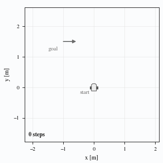
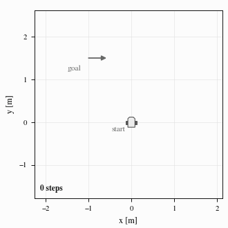
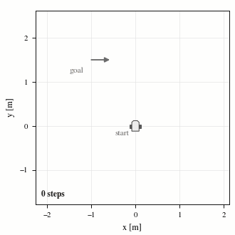
Commanded in body-frame velocities, the world-position gain is the yaw rotation R(ψ), sweeping its full range. The bilinear controller tracks at oracle accuracy (0.05 m), while the linear controller drifts off every reference (1.4 m).
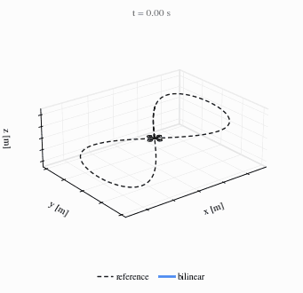
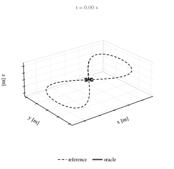
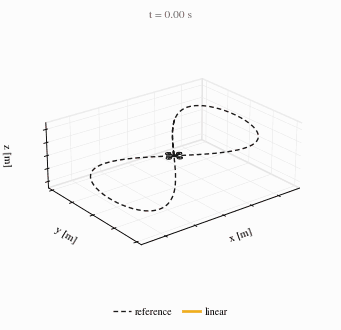
Driven by thrust and body torques, the input reaches position only at second order through acceleration, so the gain barely varies. Despite aggressive tilts up to ±69°, all three controllers fly to the goal alike — the linear and bilinear rollouts coincide. (This is a different input class from the velocity-commanded drone above.)
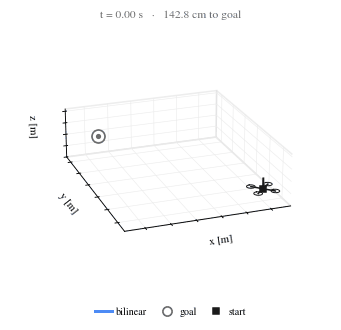
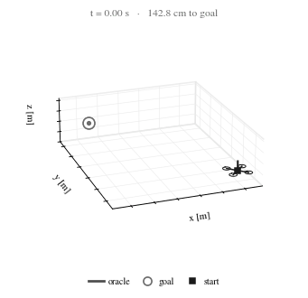
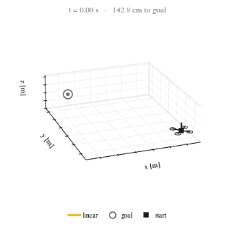
The slowly varying curvature keeps the effective gain nearly constant, so both rollouts track the target to within millimetres. This is the regime behind reported linear-Koopman successes on soft and force-driven robots.
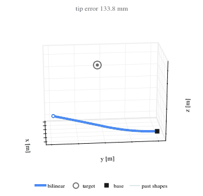
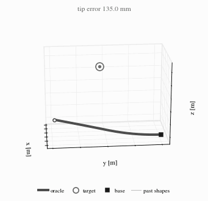
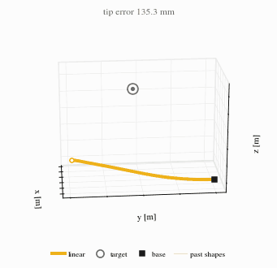
Koopman operator models let sampling-based Model Predictive Path Integral (MPPI) control roll out thousands of sampled input sequences through an inexpensive learned lifted model. Existing Koopman-MPPI, however, keeps that lifted model linear in the input, a convention inherited from convex Koopman MPC that sampling never required. It fixes one input response for every configuration, and no criterion says when that is enough.
This paper supplies the criterion and builds the controller around it. When the configuration-dependent gain through which the input reaches the tracked output varies appreciably over the operating region, no constant input matrix can match it under the standard linear readout, no state dictionary repairs the mismatch, and a bilinear lift becomes necessary. When the gain is nearly constant, the two lifts predict alike. Since a bilinear step stays in the same matrix–vector cost regime either way, the criterion makes the bilinear model the default rollout.
Each sample's cost carries an online error tube from a proportional identification bound, and a free-energy analysis supplies a practical-stability guarantee. Across six systems, bilinear Koopman MPPI tracks with near-oracle accuracy on a wheeled vehicle and a drone under body-frame velocity commands, where its linear counterpart fails structurally. On force- and acceleration-driven platforms the two rollouts perform alike and bilinearity keeps mainly a parameter-efficiency advantage — which explains the successes reported for linear Koopman control.
The distinction is a property of the system, not the optimizer. It is captured by the normalized variation of the input gain over the operating region.
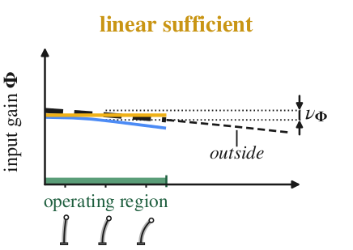
When the input reaches the output at second order (force, acceleration, torque) or the configuration barely turns, one constant input matrix fits the whole operating region. Linear and bilinear rollouts predict alike — this is the regime behind reported linear-Koopman successes.
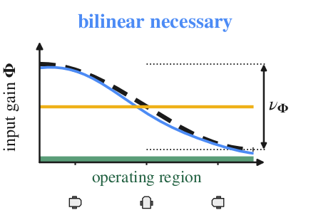
When a heading or yaw rotates the gain across its full range, no constant input matrix can match it under the linear readout, and no state dictionary repairs it — the input matrix stays constant however wide the lift grows. Only a bilinear lift, where the input multiplies the lifted state, tracks the rotation.
Each system is placed by its normalized gain variation ν̂. Where ν̂ is large the bilinear rollout is decisive; where ν̂ ≈ 0 the two coincide and only a parameter-efficiency edge remains.
| System | Gain variation ν̂ | Closed loop — Oracle / Linear / Bilinear | Prediction: bilinear vs. linear | |
|---|---|---|---|---|
| Unicyclevelocity command | R(θ), maximal (2.0) | 92 / 0 / 84 % parked | 42–48× | bilinear |
| Dronevelocity command | R(ψ), maximal (2.0) | 0.05 / 1.4 / 0.05 m | 135 ± 7× | bilinear |
| Pendulum | second order (0) | — | ~4× fewer neurons | alike |
| Quadrotorthrust command | second order (0) | 0.12 / 0.44 / 0.45 m | 1.0–1.1× | alike |
| Torque arm | second order, inertia (0) | — | 0.88–0.98× | alike |
| Soft arm | low (curvature) | — | 0.93–1.09× | alike |
Closed-loop entries: parking rate (unicycle), mean tracking error (drone), median goal distance (quadrotor). A prediction ratio near 1× means the two rollouts coincide; dashed rows are evaluated through prediction. Oracle rolls out the true dynamics and is not a performance ceiling.
World-position error over the planning horizon (log scale). The gap is structural: doubling the linear lift's dimension does not close it.
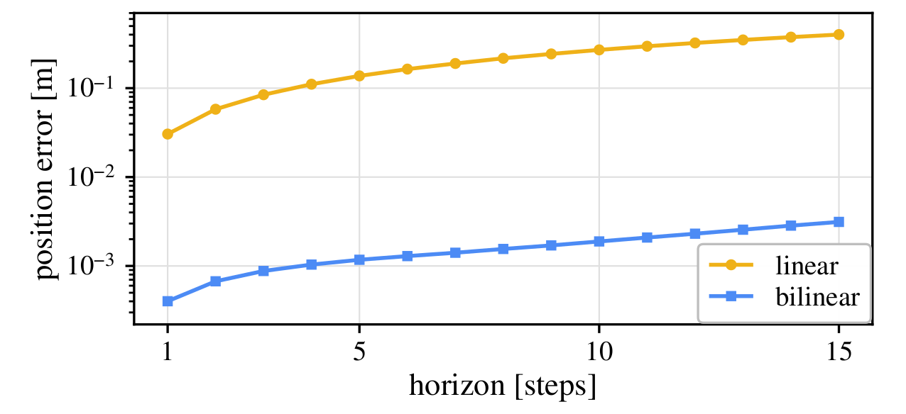
Even when bilinearity is not required, the structured input term substitutes for network width — matching linear accuracy with ~4× fewer neurons.
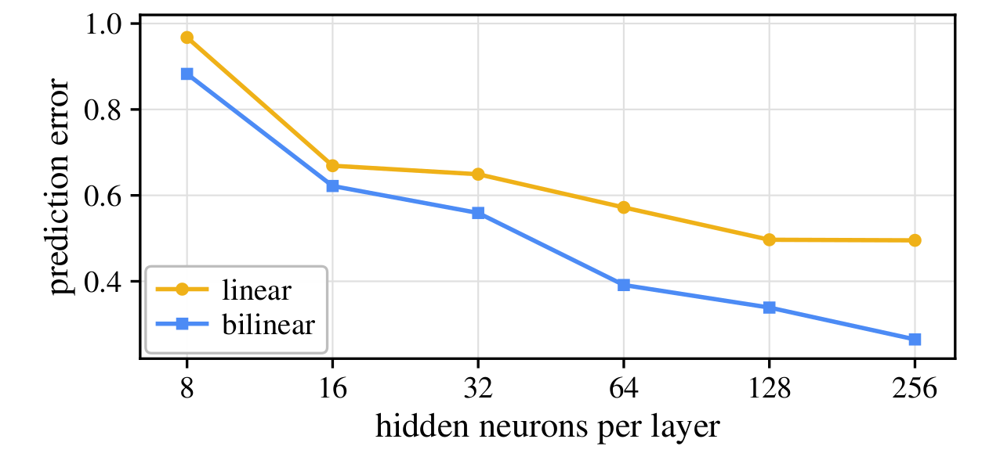
Thrust reaches position only through acceleration, so despite ±69° tilts the linear and bilinear predictions coincide on full state and velocity alike.
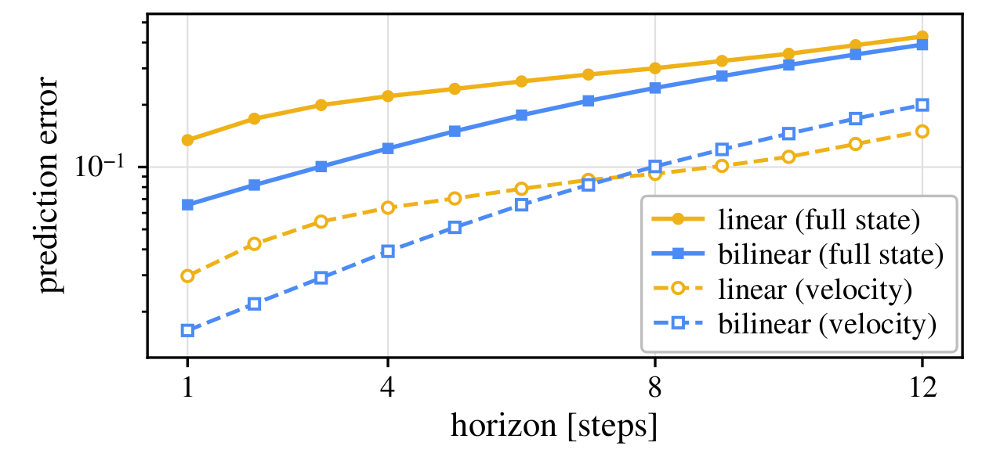
Each sample's cost carries an online error tube from a proportional identification bound. It contains the true lifted error at every held-out step.
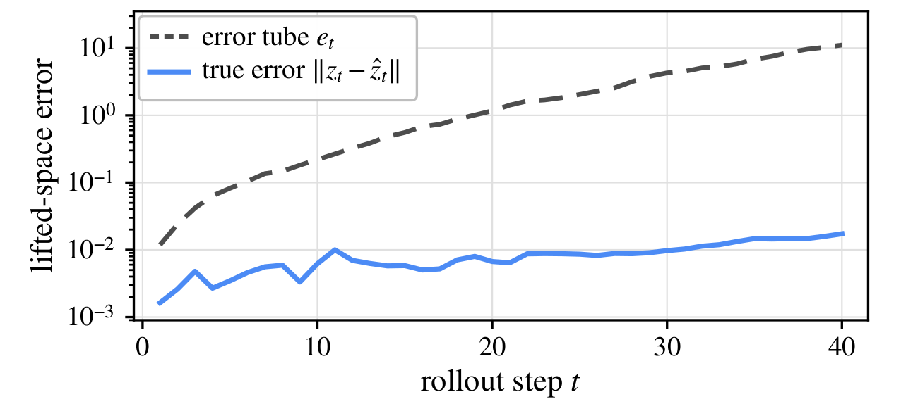
Open-loop 15-step world-position error on the drone, mean ± s.d. over ten training runs on a shared 1,000-trajectory held-out set. A larger linear lift and a generic MLP both miss the rotation the bilinear lift represents exactly.
| Rollout model | Latent N | Prediction error (m) |
|---|---|---|
| Linear | 13 | 0.409 ± 0.001 |
| Linear (large) | 29 | 0.409 ± 0.001 |
| MLP dynamics | — | 0.078 ± 0.017 |
| Bilinear (ours) | 13 | 0.0030 ± 0.0001 |
Key per-system MPPI hyperparameters, shared by the bilinear controller and the linear baseline. Method-specific choices follow the linear baseline's reported settings.
| System | N — lifted dim | K — samples | T — horizon | Δt (s) | λ — temperature |
|---|---|---|---|---|---|
| Unicycle | 8 | 1,536 | 40 | 0.05 | 0.4 |
| Drone | 13 | 1,024 | 15 | 0.05 | 0.25 |
| Pendulum | 8 | 2,560 | 65 | 0.05 | 0.8 |
| Quadrotor | 24 | 1,500 | 20 | 0.02 | 0.5 |
@article{lee2026linearbilinear,
title = {Linear or Bilinear: A Criterion for Koopman Rollouts
in Sampling-Based Predictive Control},
author = {Lee, Kangmin and Kim, Sanghyun},
journal = {International Journal of Control, Automation and Systems},
year = {2026},
note = {Under review},
url = {https://rcilab.github.io/koopman-mppi}
}